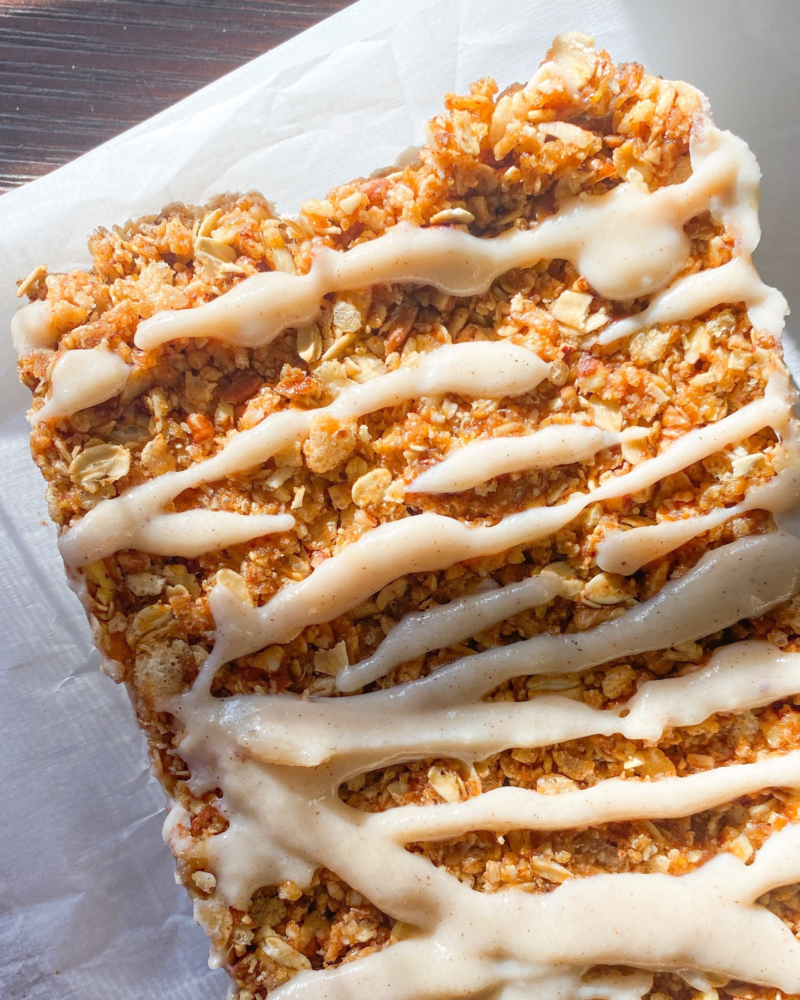
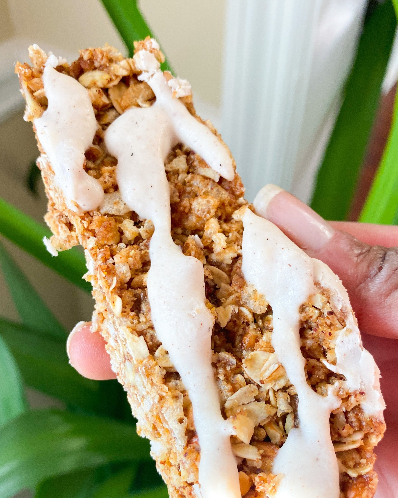

I generally don’t like to categorize individual foods as healthy or unhealthy. Instead, I believe eating a balanced diet that mainly consists of whole foods is more important than scrutinizing individual meals and ingredients.
That being said, store-bought protein bars are a highly processed food, so they’re not something I would reach for every day. They’re a quick way to satisfy hunger, but they generally also include tons of artificial sweeteners and processed ingredients. Atkins bars are no different. This copycat recipe is a good way to satisfy that same craving!
Are these granola bars gluten free?
Whether or not this granola is gluten free depends on the types of oats that you use. Oats are by themselves gluten free, HOWEVER due to the manufacturing process oats are frequently exposed to wheat. So, unless the oats you use explicitly state that they are gluten free, assume that they are not gluten free.
I used Rice Krispies’ crisp rice cereal for this recipe, and Rice Krispies are NOT gluten-free. They are made with barley and malt, which may contain gluten.

What are the ingredients for these Vanilla Pecan Crisp Bars?
Granola Bar
1 c crisp rice cereal (try this one)
1/2 c oats
1/2 c pecans, chopped small
2 tbsp coconut butter (or oil)
2 tbsp maple syrup
2 tbsp almond butter
Splash of vanilla and almond extract (optional)
Pinches of salt and cinnamon
Powdered Sugar-Free Icing
1 c coconut butter
1/2-3/4 c non-dairy milk
2 tsp maple syrup
Pinch of cinnamon

How do you make these Vanilla Pecan Crisp Bars?
Line an 8x8 loaf pan with parchment paper and set aside.
Place the crisp rice cereal, oats, and pecans in a food processor and blend for just a few seconds. We don't want it to be too grainy–we just want to make it a bit smaller.
Heat the coconut butter, maple syrup, almond butter, vanilla and/or almond extract, salt, and cinnamon in a small saucepan over medium heat. Once the liquid gets warm and melts together, pour it over the oat mixture and toss so it's evenly coated.
Press the mixture into the loaf pan and freeze for one hour.
Meanwhile, heat the icing ingredients in a small saucepan until the mixture thickens. Add a bit more non-dairy milk if it gets too thick–you want it to be slightly runny.
Take the bar out of the freezer and flip it upside-down on a baking sheet. Pour about 3/4 of the icing over the bar and spread it in an even layer. Freeze the bar (still upside-down) for about 30 more minutes until set.
Now flip the bar so it's right-side up and drizzle the remaining icing on top. Freeze for about 30 minutes until set.
Slice into rectangular bars, and store in an airtight container in the fridge.